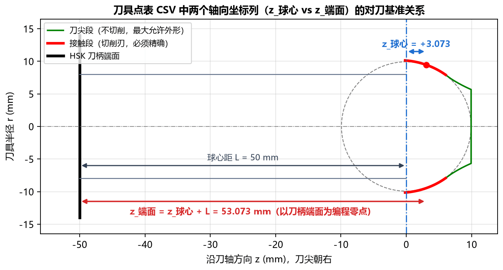

6.2 导出 CSV 数据表详解与坐标基准说明
TrackForm 导出的全部 3 类 .csv 文件均采用 UTF-8 with BOM 编码格式：
- 用 Microsoft Excel / WPS 表格双击打开：中文表头与注释直接完美显示，绝不乱码；
- 用记事本 / VS Code / 数控系统读取：以
#开头的行为元数据注释行，数据列之间以标准英文逗号,分隔。
一、刀具点表 CSV (tool_profile_points.csv)
点击左下角的 刀具点表 CSV 按钮，可导出精确成型刀具单侧刃口（按从刀柄侧外缘下端 刀尖顶端的顺序排列）的全部离散坐标点。
1. 极其重要：理解双轴向坐标基准（z_球心 vs z_端面）
为了同时满足理论包络分析与数控工具磨床/加工中心以刀柄端面为编程零点的现场习惯，导出的 tool_profile_points.csv 同时提供了两列轴向坐标：

| 数据列名称 | 工程含义与坐标基准定义 | 数值特征与适用场景 |
|---|---|---|
序号 |
点位行号（从 1 开始连续编号） |
按刀柄侧（外径最大处） 刀尖顶面的顺序排列。 |
段 |
标识该点所属的刀头功能区段 |
|
r |
刀具半径（单位：mm） |
各点到刀具旋转中心轴线的径向半径（例如接触段从 10.13842 递减至 7.92685）。 |
D |
刀具直径（单位：mm） |
即 ，方便直接核对各轴向高度处的回转外径。 |
z_球心 |
以虚拟钢球中心为原点 z = 0（向刀尖方向为正，单位：mm） |
与软件界面 Tab 1：刀具廓形 及计算结果面板中的 接触段 z 完全一致（例如从 -0.17469 递增至 +9.92200）。 |
z_端面 |
以刀柄定位端面为原点 z = 0（距刀柄端面距离，单位：mm） |
换算关系：（当 刀柄方向 = 朝 +Z 时为 L - z_球心）。现场最常用：数控磨床或加工中心装夹 HSK 刀柄时，直接以刀柄定位端面（HSK 法兰端面）作为 Z 向编程零点，即可直接读取 z_端面 列坐标进行编程与三坐标检测，免去一切手工加减换算！ |
2. 真实导出文件内容示例
# TrackForm 球道成型刀具廓形点表
# 钢球直径=19.844 PCD=62.464 偏移e=4.270 Rp=31.5225
# 截面=椭圆 接触角=42.00° 切入角=36.00° 球心距=50.000 余量=0.000
# 椭圆 a(横向)=10.1762 b(径向)=10.6436 uc=0.6929 相似度=1.0400 顶隙=0.0287
# 顺序: 刀柄侧 -> 刀尖；段=接触 为切削刃(必须精确)，段=刀尖 为最大允许外形(不切削)
# r=半径(mm) D=直径(mm) z_球心=沿刀轴距虚拟钢球中心(刀尖为正) z_端面=距刀柄端面
序号,段,r,D,z_球心,z_端面
1,接触,10.13842,20.27684,-0.17469,49.82531
2,接触,10.13819,20.27637,-0.16469,49.83531
...
644,接触,7.92685,15.85371,6.02050,56.02050
645,刀尖,7.91944,15.83889,6.02849,56.02849
...
1038,刀尖,0.00000,0.00000,9.92200,59.92200
二、方程常数（Table 1） (table1_constants.csv)
点击左下角的 方程常数（Table 1） 按钮，可将计算结果中的 轮廓方程常数（Table 1：） 导出为标准 CSV 表格，格式直接对标主机厂球道工程图纸的 Table 1。
真实导出文件内容示例
# TrackForm 球道基本轮廓方程常数 (图纸 Table 1)
# 单圆弧刀具 (取整 3 位): R=12.3600 rc=-2.1920 zc=-1.0710(刀尖向)
# 切入角 β=36.00° 轨迹半径 Rp=31.5225 常数依据=拟合值
常数,数值
C1,2.19160
C2,-25.50227
C3,-18.52849
C4,-19.59946
C5,1.07098
C6,-21.56794
C7,650.36593
C8,-6.06824
C9,1.07098
C10,152.76417
提示：如果需要按取整后的圆弧尺寸生成常数表，可在高级参数中将
常数依据切换为取整值后再点击导出。
三、基本轮廓（Table 2） (table2_basic_profile.csv)
点击左下角的 基本轮廓（Table 2） 按钮，软件会在球道底部到终止高度之间均匀生成离散点（默认 117 个点，由高级参数 基本轮廓点数 控制），导出与客户球道图纸 Table 2 (BASIC PROFILE) 格式完全一致的基准轮廓坐标表。
1. 各列坐标含义与图纸点表对标说明
No：点序号，从1（球道底部最低点）递增至117（球道上边缘终点）；Z(±)：该高度处球道法向截面的水平横向半宽坐标（单位：mm，左右对称取±）；Y：从球道底部最低点向上量取的截面高度坐标（单位：mm，第1点球道底处固定为Z(±) = 0.00000, Y = 0.00000）。
2. 闭环复核技巧：导出的 Table 2 可直接作为点表截面重新导入！
由于 table2_basic_profile.csv 采用标准的 No, Z(±), Y 格式，您可以随时在左侧基本参数中将 截面类型 切换为 点表(CSV)，然后直接选择刚才导出的 table2_basic_profile.csv 文件进行闭环验证（详见 8.2 案例二：导入客户点表 CSV 与 Table 1/2 对标）。
3. 真实导出文件内容示例
# TrackForm 球道基本轮廓点表 (图纸 Table 2)
# 常数依据=拟合值 轮廓终点=球道边缘 点数=117
# Z(±): 截面水平坐标 (mm)，对称取 ±
# Y: 截面高度坐标 (mm)，球道底处 Y = 0
No,Z(±),Y
1,0.00000,0.00000
2,1.27688,0.07720
3,1.80379,0.15441
...
116,10.02521,8.87833
117,10.04426,8.95553